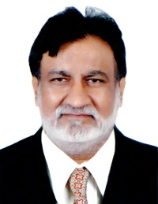
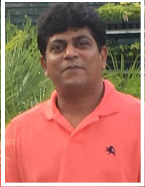
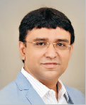

Publication Committee
Dr. Himanshu B Soni (Principal)
Dr. Kaushik Nath (Convener)
Prof. Rajesh Sanghavi
Dr. Rahul Kher
Prof. Umang Jani
Prof. Mithila Zodape
Prof. Riddhi Vashi
Prof. Vishal Prajahpati
Prof Sukritindra Soni
Prof. Priyanka Israni
Student's Editorial Team
Vivek Tomar(Convener)
Hiren Patel
Manisha
Riva Vaishnani
Harsh R Shah
Shivangi Shah
Urja patel
Dhruv Shah
About the cover
As a symbol across many cultures, feathers have always replicated a connection to spiritual Realms and divinity. And because of their connection to birds, they have always been a symbol of flight and freedom, not just physically, but also in a mental or spiritual sense. The colourful feather was sketched by Nancy Garala, a student of third year Computer Engineering.
A doodle is an unfocused drawing that can have concrete representational l meaning of may just be abstract shapes. The doodle art which forms a part of our back cover design portrays an assortment of un-scaled shapes and symbols encompassing a few aspect of all the engineering discipline. It was illustrated by Hiren Patel, A student of final year electronics and communication engineering
Any opinions, views and observations Expressed in this book are those of the author and do not necessarily reflect the viewsf of the publications committee.
A Notet of congratulation
 |
 |
Er. Bhikhubhai Bhailalbhi Patel |
Sri Manishbhai Sureshbhai Patel |
| Chairman | Vice President |
We are pleased to take this opportunity to place on record our heartfelt congratulations with sincere appreciation to the newly elected Chairman and Vice President for the glorious victory in the prestigious election of Charutar Vidya Mandal (CVM)- the oldest educational trust of Gujarat. We ardently hope that signing result will enable you to pursue the reforms with rigour and vigour. Under your charismatic leadership and valuable guidance CVM will continue to strive ceaselessly for the quality and excellence in the field of education.
We look forward to you as the sculptor of young minds, moulding and motivating the students to be responsible citizen of country and blaze a trail l of Glory.
wishing you all the best for your normal future endeavours.
principal, staff and students.
( gcet family)
02-Message from the Chairman
It is my pleasure to learn that GCET is publishing the 16th issue of the Annual Magazine GCET VOICE on the 22nd Annual Day. Established in the year 1996 with just two undergraduate programmes, today GCET is one of the popular destinations of engineering education in the state of Gujarat. It is the endeavour of the Charutar Vidya Mandal to make the academic like, a smooth journey full of joy and discovery. Charutar Vidya Mandal believes in holistic education for the youth of Gujarat, encompassing – academics, co-curricular activities, sports education and life-skills learning. Our endeavor is to strike a balance between state-of-the-art infrastructure and an internationally acceptable education. We impart education that is based on conscience and we rear a breed of young minds that are bustling with self confidence, motivation and ever ready to take up challenges.
The college magazine is a platform for the students to express their creative pursuit which develops in them originality of thought and perception. The contents of the magazine reflect the wonderful creativity of thoughts and imagination of our young students. I extend my warm wishes to the principal, staff and students of GCET to continue this journey on the road of excellence.
I take this opportunity to congratulate the editorial team of GCET VOICE and wish that the magazine to be one of the leading periodicals of the country
Er. Bhikhubhai B.Patel
Chairman, Charutar Vidya Mandal03-Message from the Vice President
I am happy to learn that GCET is bringing out yet one more issue of the annual magazine “GCET VOICE”. Academic excellence along with co-curricular and extra co-curricular activities completes the process of education. And it gives me great satisfaction that GCET is progressing in all its endeavors towards the overall development and personality of the students.
The college magazine is a platform for the students to express their creative pursuit which develops in them originality of thought and perception. The contents of the magazine reflect the wonderful creativity of thoughts and imagination of our students.
Dear students, you are the nation-builders. You are the movers of technology. You are the agents of change. It is our fervent hope that the years that you spend in GCET would enable you to equip with leadership and managerial skills. The knowledge that you will gain, the fine qualities that you will imbibe and the technical skills that you will learn to apply will be your major contribution to your parents, to society, and to the nation.
I convey my best wishes to all the students of GCET for a successful career with flying colors.
Shri. Manishbhai S Patel
Vice President,Charutar Vidya Mandal04-Principal’s Message
I am pleased to know that the publication team is ready with the college’s annual magazine GCET Voice- 2018.
The college magazine is a Mirror which showcases the activities and achievements of the institute. From the year of institute’s inception, every year we have documented all activities of the institute in form of the college Magazine named GCET VOICE. Really it is a happy moment to see that we are maintaining same tradition and publishing the college magazine for this year too. The magazine presents the glimpses of the growth of the institution on many fronts. The highly qualified and dedicated members of staff have always raised shoulders and have carried out their duties with a high level of commitment.
GCET has excellent infrastructure facilities and is well-known for its high quality of educational standards and devoted staff members. We cannotforget the contribution made by ourwell-disciplined and responsible graduated and ongoing young students. The concrete efforts put up by the staff and students reward in terms of continuously improved national ranking of the institute year after year. Placement is another front in which the institute has made upward strides only. However, R & D and consultancy are the areas in which we still need to brace ourselves up. In the globally competitive world, we have to make ourselves better than the best. Keeping this point in mind all the stakeholders of GCET have to work smartly for the bright future of our institute.
I take this opportunity to congratulate all the members of the editorial board of GCET VOICE and convey my best wishes to staff and students for their future endeavors.
Dr. Himanshu Soni
Principal
01-Editorial Jottings
Physical or digital?
Reading habits over past centuries have evolved through a gradual transformation, thanks to the advent of information and communication technology! But regardless of the medium, a good reading culture in any nation remains to be an enviable virtue. In a recently published article from the University of Nebraska – Lincoln the readers are categorized into three types. Early 20th century was of ‘dedicated readers’ doing page to page reading, late 20th century viewed ‘flapping readers’ with enormous availability of printed books, materials, microforms, digital resources, and web pages. These flipping readers swiftly shift, title to title without in-depth reading. The 21st century generation also known as generation Z, and the digital generation is of ‘glancing readers’, who go through highlights in multiple formats and devices. Reading from screens tends to be significantly different from reading printed text in text–saturated world of www’. Typical screen–based reading behavior emerged with ‘browsing and scanning, keyword spotting, and one–time non–linear reading. At some point it seems as if the emergence of screen reading through smart phones and tablets print literature will find itself at war with the internet. But a book is a book ….. a reassuring, feel-the-weight, take-your-own-time kind of thing...so do the magazines and the periodicals. The book isn't dead; technology is simply helping it evolve beyond its physical confines. We need to bridge the gap between the physical and the digital, whereby one would supplement the other. Keeping this in mind the e-version of GCET VOICE will be made available on our website. In addition there will be an App developed by our students to reach out to all tech-savvy readers
The publication of 16th edition of GCET VOICE reflects and encompasses the diversity inherent to the academic and extra-curricular spaces in GCET. The magazine continues to expand its reach to achieve its vision of being a truly representative student publication. I take this opportunity to place on record my sincere appreciation and gratitude to principal and other colleagues of the publication committee and also the student members of the editorial team without whose enthusiastic support the publication would not have seen the daylight. I hope the publication of GCET VOICE will act as a spur in inculcating the talent and blossom the creativity of the young students. The team hopes to build on this ethos just as much during the upcoming academic years as well.
Dr. Kaushik Nath
Convener, Publication Committee
Students’ editorial team speaks……
Many potential writers in the top the literature demand search freelancers.
Our goal was to create something incredible. We are accomplished by encouraging our authors to submit their creativity and uncover their voices. I got a chance to meet and work with some incredible people. The team was really friendly and super helpful
GCET voice is not just a magazine but a platform for exchanging ideas. I believe it tries to break the myth that the modern young generation, especially that Technocrats lack interest in Literature. Overall it was great experience.
Who knew these engineers had an ace of their sleeves; opinions painted and inkedl as intriguing as it could be, I happened to behold ,read and believe this epilpany.
It was remarkable experience being a part of college magazine. The eager beavers of GCET have once again proved their talents.
It has been a privilege to contribute in the process of building GCET voice. It is surprising to see how creative such young minds could be. The team, the press and the management altogether made it and ineffable experience.
05-A Random Act of Kindness…
Vivek Tomar
Robert, a young aspiring entrepreneur was taking the subway to upper east Manhattan. He had to reach quickly to a meeting an agent had arranged for him with some investors. When he got down at the station he noticed a young boy with a board hanging to his neck ‘Need Money For Food’. Although Robert was running late on his schedule, he went upto the boy and gave him two dollars. He observed the boy had some crayons in his pocket which he must’ve used to write down the sign board. Robert asked the boy to give him some of his crayons. The boy stared at him in surprise. Robert said “There isn’t a free lunch boy. After all we are both traders”. Saying this Robert took two of his crayons and ran to his meeting. The boy still shaken up in surprise
The meeting went pretty well and Robert got the money he needed. Robert’s franchise boomed and twenty years down the line he became one of the leading players in his sector. One night at a corporate party, Robert received a call from his manager. One of their subsidiaries in New York was seized as the managing officer there was laundering money without Robert’s knowledge. This could cost Robert millions of dollars. Robert also realised that a consignment from the same subsidiary was due for delivery next week. He needed help, a big one. The news spread like fire in the corporate world. Two days later Robert’s secretary called him informing that a firm offering similar products and services had volunteered to help them and deliver the consignments within the deadline. The deal went through and the delivery was done.
Robert received a memo for the deal from the firm. The contact details mentioned the owner, Daniel Peters. The transfer was made and the payment was done. The same night Robert called Daniel thanking him and asked him if he could do anything for returning the favour. Robert was astonished after listening to what Daniel had to say. He was totally speechless. Daniel said “Maybe now is a very good time for you to return my crayons sir. After all I have completed my trade”.
The world does not have many good people so if you cannot find one, be one.
23-'Silence vs. Inner Peace'
Keyur bhatt
Final YEAR MechanicalSilence has filled up my life,
Its lot noisier than the world outside.
I thought silence would be beautiful,
Would give me more peace to sort my thoughts and see through.
But it brought out chaos in my thoughts,
Confusing as it is, made it tough to ignore.
And now I know I want inner peace, & not the world to drop dead and cease.
My isolation didn’t help me in any way,
Brought out more emptiness than happiness it can.
So get outside, find out a reason to live,
Otherwise everything would remain just a dream.
-----X-----
Sketch by Nancy Garala,3rd Year Comp.

I wrote this because I know many of us confuse silence, isolation, introversion similar to peace which by the way are not same. We all seek inner peace and it is symbolized by silence. This symbolic silence is about the emptiness of human mind and not the physical absence of sound.
Sitting quietly and not interacting with anyone can help you for a short period of time but for long-term this might be dangerous. Human as a species only exist because of its socialism. We interact with each other, we depend on each other and so on
Find a reason or a thing that can give you true peace, because isolation would definitely not provide you with what you need.
Warrior
Riva Vaishnani
3rd year, CP

Sketch by Nidhi Desai,1St Year Mech.
Her eyes were magnificent
Her face, a cliché of colours of life
She beholds her beauty
Like she owns fearless mind.
Her boldness was applauded
Her acts were furious
No one ever came to though
A warrior can be so gorgeous!!
No ego trip she besoin
No prix could define her
‘coz she knew she was meant for war
‘coz she was her own kind of soul!!
Now this mortal warrior
Rests in peace amidst forests
Her body revealing great stories
Her face singing loud her glories.
27-The Big Question Mark '?'
Harsh shah
Final Year Civil Dept.
We live in the age of pure assumptions and a place where you are not confident about your own self. This is an era of "Fake Belongingness", "Fake Sympathy", "Fake Affection" and what not! Humanity is endangered amongst us. It is infected by egocentric humans playing imitation games and running away from the reality and truth has become a scarce resource. Everyone believes in supremacy, they want themselves to be followed and identified by others with a domineering state where the powerless shall succumb. We are incarcerated in the era where fake is more accepted and enlightened because of the fact that it is pleasing to hear and digest. But the reality says that human race is pulling each other towards dolour on the name of "Survival".
However, some people still believe in good deeds and selfless acts, even though they get hurt, broken, or even torn but still they believe in helping others. They are the ones who promote the trust in humanity and kindness. Such benevolent people are significant for the mankind.
We are considered to be the social animals and yet we prefer solitude, because the generation is undergoing some serious trust issues. The world, though, socially connected by technology, is separated by the political game of survival!
The human behaviour is situational camouflaged and thus the sceptical “Mystery of Humans" will remain a big Question Mark...
THAT LAST BENCHER
Kaustubh Paira
2nd Year, CIVIL
Respected sir,
It’s me. Didn’t recognise me? It’s okay. I never occupied that first bench to get your attention either. I never gave you my expensive pens and not asking for it later. I never conveyed your message to other staff members ever. I was bound to be unrecognized. Or should I say, I was never allowed to be recognized.
The academic session began with that first lecture when you came up and asked to introduce ourselves along with the “PERCENTAGE’ we passed out with. Henceforth, I learned to judge people by their academic capability. Not to mention, your changes in gesture towards students according to their marks. That “IMPRESSIVE” look to the 90 % guy and that “GOOD FOR NOTHING” look to the student with 60%. If only you had considered to ask them what other thing they were good at.
Then came the time when you are supposed to make us sit because of course, we are too niche to decide what’s our best position to sit and you better than anyone knew the right bench we deserved. If you have not known by now, I was made to sit in the last bench because, myself 50% but I am good in…
Never mind doesn’t matter.
You taught us since the beginning that education is important. Education as in history, science and maths you meant. Not that sports, arts and literature. That is just for the sake of our extra-curricular activity right? And probably when the annual function takes place. For the rest of the year, we are just last benchers.
By the time, I somehow managed to reach up to the level of your expectations, you said maybe I was trying too hard on my brains and should just focus in getting the passing marks. My simple perception on achieving knowledge outside the books was hence nullified by your fact that it can get me nothing. Apart from the other taunts, I decided to not let it get under m skin.
“Your kid is a loner. Tell him to sit along with the first benchers so that he can get a little help”Those were the words that came out of your mouth during the parents-teacher counselling. But obviously, you wouldn’t tell them that making me sit on the last bench was indeed your idea in the first place. And hence, it was finally shoved down to my throat that my love for writing won’t get me far enough but an A+ on my report card would do. I had to give up on my diary and had to switch it with the assignment book. Not that I was never ever interested in studies but making me do that at the expense of my passion somehow made me lose interest in it. I finally ended up studying. And fortunately scored decent too. Of course, not well enough in your eyes but will do.
So few years from now, I decided to take up a stream where I can secure myself with a good future. And as for writing, it can be done anytime right?
Maybe, after school, or after graduation, or after getting a job? Okay after settling down? Oh come on, are you still a kid that you need to own a diary and write down stuffs that comes in your mind? You should have done it when you were younger.
Sir, your education system made me quit that extra-curricular activity and now the society asks me why I didn’t do it at that time.
Yet, I am still trying to justify my degree which wasn’t even my own choice in the beginning. And what about writing? Well, not a diary anymore but the writings somehow found its place in the trash folder in MY COMPUTER.
Yours respectfully,
Back Bencher
21-'Ride in a metro'
Dhanvin yagnik
Rahul Agarwal , an ambitious man of 28 years was travelling in Metro train from Connaught Place to Nizamuddin,in Delhi. He was a hardworking person who believed that the only way to go ahead in life is through hard work and craftiness. He also believed in luck factor only because he had experienced it in past. He hated travelling in metro because it was too congested and he hated that people rubbed their bodies against him as they struggled to stay comfortably in the train. ‘The biggest disadvantage of the metro is that the doors close and fresh air is not able to come in which is a problem because the air conditioning had stopped working ‘, he thought. He looked around him and saw a guy who was sitting with his legs cramped up,a woman who was feeding her child, few techies who were talking about new investments which were coming up in the field of information technologies...few thousand crore investment in the NCR. However, what amazed him and moved him the most was a particular fragrance, a very specific fragnance, which he had smelt a long time back. It was the smell of Claire-De –Lune, an expensive brand of perfume. His girlfriend used to wear it. His thoughts etched back to her. He hadn’t seen her since they had broke up,nor had he heard of her. But the smell was strong and he was free so his thoughts etched back to her. He remembered how they met for the first time, the shyness which changed to love within a few months and love which changed back into nothing within a few years. She was very beautiful. Black eyes, dark hair upto shoulder, chubby cheeks, oval face ,thin lips and a strong, well built figure. She was very caring and kind hearted. He loved talking to her and so did she, or so he felt. Besides, she was very rich After being in a relationship for a few years he asked for her hand. However, she gave him a thumbs down saying that she was not interested in all those things and she wanted to live as free bird. He was aghast and tried to reason with her but he stood no chance against her bossy nature. Finally he gave up and went home thinking only about how he would work his way all up to corporate ladder and earn a lot. The lady who was wearing the perfume was thin, frail and weak looking. She had her back turned to him so he couldn’t see her face. She had a scarf on so he wasn’t able to see her hair. She looked nothing like his ex. The train halted and the board flashed, Nizamuddin station. “Come Sheetal ,lets go”, a girl said.’Sheetal, it was her name, but it couldn’t be she ...she was gone..why did she come back.....’ he thought. “Excuse me, Excuse me, let me through, careful there, let us through, my sister is a cancer patient, let us through, no pushing..Excuse me..”, the girl said. Everyone moved aside. Humanity still lives when it sees someone suffering and they have to do nothing except move a bit to help them through. “Stage 2 cancer, it seems “, the guy who had his legs cramped up said to Rahul. He was a medical student. “Just takes a few years to spread. Stage one itself is quite painful..and to think about stage 2”, he grimaced. Rahul seemed unfazed. He got out through the next door and thought,” Serves her right for not accepting my proposal. But it’s good she didn’t. I would have wasted my hard earned money on her treatment and would have got nothing except a frail,old woman who would be of no use to me. I am a young man”.
“Didi, did you see him? It was him..Rahul..He seemed fine!”, the girl exclaimed.
“Yes I saw him. I hope he is happy. I rejected him that night because I was diagnosed with cancer in the day. I just hope that my no makes him happy. It would be heartbreaking so see him suffering because of me. I really love him, you see.”, Sheetal said slowly.
The girl gasped. Her sister had never spoken about him in last two years, those two years when she battled with cancer.
'Life…'
-Brijesh A. Wala
From the sands he emerged,
To a world where his life got divulged.
Just a wanderer to the world, isolated from the feelings,
No matter how harsh the pain, always followed by the healings.
No worries of the world,
His presence is more expensive than gold.
Then he grows, he learns, and his life starts to transform,
The point where his psyche commences to form.
This gives him either love or hatred,
That paints his character either black or red
heir runs on his pursuit of happiness,
Only the adamant will survive all its dizziness.
And the rest remains wanderer to the course of their life,
Feeling regret for their life full of gaffe.
And then he chooses either to sleep or to survive,
And fights till the victory thrive.
And then he waits to rest on noble lands,
Where his soul and the sand completely blends.
25-TAME THE OCEAN OF MY MIND
Sagarika Das
With a sight so long,
I embark on my journey
They think I am not strong
That, I might get entangled in tyranny.
But life is one, it must go on.
Whatever the differences, whatever the bonds.
The beauty of my dreams
and the passion in my heart
It’s precious.
No one can grab its hold,
till there resides wonder in my soul.
And I daresay,
There would be another dull start to another fine day
But an opening of sorts will finally find its way.
The rays of hope, the resolve in my eyes
will illuminate me from within.
And I will continue my life
with a clock beside me ticking.
Now here I am at the cross roads,
with a gleam in my eyes,
to conquer the cosmos
I finally take my first step forward
pertinacious, determined
a sailor set out to tame the ocean of her kind
'EACH ONE TEACH ONE'
ASHISH M. AHUJA
EC 2nd Yearl
Education is the most powerful weapon to change the world.can everyone get this weapon in their childhood when we need the most! for india it may be wrong. In eleventh report of ASER(Annual status Education Report) which is released in New Delhi,18 january 2017,Enrollment of the age group 6-14 has been 96% or above simce 2009.This proportion increased from 96.7% to 96.9% in 2017 but more than 40% of india's children drop out of elementary school and According to google 10 out of 3 ladies are educated.we can see that enrolled students are more but present in schools are very less.We can not blame all time to goverment for this.Goverment is try is best to increase literacy rate but due to the lack of awarness and people mindset it failed.Goverment hire the staff in goverment schools as per their knowledge not on their honesty and mindset.
Education is the only way to understand the things.Now a days goverment try to digitalize all the things.in 2017,mobile phone users expected number is 730.7 million,what about others! it means still approximately 500 million people who are not use mobile phones.This is why uneducated and unaware people are biggest obstacle for growth of india.uneducated people are harmful for everyone.Due to this kind of persons corruption occur in society.uneducated people causes more crime than educated people.GST is very good decision taking by goverment but small merchant find problems because they don't know how to access internet and what is the benifit of it that's why they may be against GST.due to the lack of awarness and low of education this kind of people be a fool by many politicians.They suffer a lot because they don't know their rights thus many other people take advantatge of it.Goverment starts many policies for them but due to unawareness they don't get.That's why poor become more poor and richer bocome more rich
Now coming for the solution of it,Being a educated people and as a youngster our hopes are more from the goverment to develope country.In English literature there is one sentence 'HELPING HANDS ARE MORE POWERFUL THAN SPEAKING MOUTHS'.We all heard this kind of sentence uptill now and everytime we think 'what can i do? i haven't more money to educate them'.But the money is the only way to help them.As a educated people we have most poerful weapon in our hand that is 'knowledge'.Using this weapon we can help the uneduacted people too.If we really want to do something for them then we can spend our one hour for uneduacted people and give them right knowledge and aware them for all about things.we can apply 'EACH ONE TEACH ONE' formula to do this.we can start with children because according to me 'children have better gain capacity than old age men'.in little age children minds are clear and they easily install the things but old age uneducated men has thier own negative thoghts ans mindset that's why it is very difficult to first remove the negative thoughts from their mind and then teach them.if we aware the one child then indiractly we aware the one family because that child change their mindset in a goodway then family learn from the child and change their routine accordingly.this work give us inner peace and positive thoghts.Those students which are guided by us definately in future they help another people.
'Rhnull, The Rarest Blood Type On Earth, Has Been Called The "Golden Blood"'
Shreyansh Patel
3rd YEAR,, Electronics & Communication
There are eight common blood types. Keyword there? Common. If what you know about blood stops right around there, then this is all going to escalate very quickly. There are literally millions of varieties of blood types, and the rarest one is shared by fewer than 45 people on Earth. Talk about exclusive.
Easy As A, B, O
The ins and outs of blood types is way more complicated than you probably want it to be (or maybe that's just us?), but here's a relatively quick crash course. We are filled with red blood cells that carry oxygen through our bodies. Antigens cover these cells like sprinkles on a donut. The semblance of antigens on your red blood cells are like little name-tags that tell your body, "Hi, I go here," to which your antibodies respond, "Nice! The rest of us won't attack you." Your white blood cells latch onto these antigens to act as a shield against infection.
The two main antigens are A and B. The kind you have are determined by the alleles (gene variants) given to you by your parents. A and B are dominant, while O (which does not have a corresponding antigen) is recessive. Then, in a different group, there's the Rhesus D antigen, which gives us all the positive/negative stuff. For whatever reason, it's called the Rh factor. Positive blood has the Rh factor (it contains the D antigen), and negative types lack it. Easy enough. There are 35 blood type groups recognized by the International Society of Blood Transfusion, but for simplicity sake, most people only really need to know about the two most important ones: ABO and the Rhesus D system.
If the 35 blood type groups didn't throw you, now is where it gets even hairier. There are hundreds of different antigens, and they fall into 33 recognized antigen systems. These don't all really get talked about because, for example, more than 99.9 percent of people carry the antigen Vel. Tagging a Vel onto the end of your blood type (i.e. ABVel+) would probably just be redundant. Not simplifying your blood type would kind of be like telling a really boring story with all the unnecessary and obvious details included. Just get to the good stuff, please, we can assume the rest.
There's Rare, Then There's Rhare
After the eight common blood types, we've got a few unicorns. Something like 160 of the 342 blood group antigens are high-prevalence, which means most people have them on their red blood cells. If you lack an antigen that 99 percent of people have, then your blood is considered rare. If you lack one that 99.99 percent of people have, then congratulations, you're Spiderman. Just kidding, probably.
The rarest blood type in existence is Rhnull blood. This stuff is characterized by a complete lack of antigens in the Rh system, which is the largest blood group system. This includes the D antigen (Rh factor, baby), plus the other 50-something antigens in the group. This blood type is so rare that only 43 people on Earth have ever been reported to have it, and there are only nine active donors. Until 1961, doctors assumed a person lacking all Rh antigens would never even make it out of the womb alive. "It's the golden blood," Dr. Thierry Peyrard, Director of the National Immunohematology Reference Laboratory in Paris, told Mosaic.
Besides making someone feel really special, Rhnull or other rare bloods are extremely valuable. "Because Rhnull blood can be considered 'universal' blood for anyone with rare blood types within the Rh system, its life-saving capability is enormous. As such, it's also highly prized by doctors – although it will be given to patients only in extreme circumstances, and after very careful consideration, because it may be nigh on impossible to replace," Mosaic reports.
Reference : curiosity.com
09-A hustle stressful Life of Professional!!
Arpit Jain
(Final Year, Civil)
Man! Man! Unhappy man!
Come and see the green’y’ land,
Fully of grains and beautiful narrow lanes,
Love the nature, not the modern man-made land.
Man! Man! Jostle man!
Whole day running everywhere,
In search of pleasure and routine ware,
Come on man, ask the nature what she had spread everywhere.
Man! Man! Filthy man!
Living in the acidic rain,
In the city having no proper drain,
Spoiling flora-fauna on the other hand.
Man! Man! A lot of Stress!
Working every day in the press.
Searching whole day for criminal trace,
Come on man, ask the nature how to get the body rest.
12-'Life as we know'
Keyur Bhatt
Final Year, Mechanical
As desperate as one can get,
Life doesn’t unravel herself as you want.
Life would shock and surprise you,
After all we are her children and…
The least caring thing she might do is
To give you what you wanted.
'RESTART'
--Shivangi Shah
2nd Year Mechanical Department
“Writers emote with ink”, Robert sir, my very first literature teacher, taught. Hardly did he know that his words would trap an 8 year old between the alphabet and punctuations. Mere letters when put together could form words, in numbers so enormous, that never could a man learn all of them in one lifetime- I was amused, I still am. A word as compact as L-O-V-E could contain a feeling that not even hearts can, it overruns through eyes- I was learning, I still am.
As the ink through my pen trickled today, inconsistently, a tear rolled down my cheek, slowly, as to make me notice its warm existence and then rapidly evaporated, leaving me abruptly with chills. Baffled. Am I not supposed to emote with ink? Why is it that I can ink everyone, but you? I think of you. I write. I weep. I repeat! Why? I realize, ink can never suffice the memory of you, the memory of us.
strengthening me pillar by pillar. If I could live, despite her leaving- I can do anything. As you reinforce the human that I am, you weaken the writer in me. Because of you, I write better now, still, the ink It has been 1 year and 8 months since you left. Yet, your memories visit every day, struggles its way out through the nib when I recall you. How am I a writer when I cannot even express the very reason of my writing? Perhaps, I am not. Perhaps, I am just another shapeless soul that could expand through space of thoughts and confine into a dot when put into a vocabular-vacuum. Perhaps, I am just that spirit which wishes to immortalize you in its words and ultimately, meet you up in the clouds- to live it all over again, to restart.
(IN THE MEMORY OF MY BELOVED, DADI)
13-'LIFE IS LIKE AN ELEVATOR…….'
Yash jadhav
FINAL YEAR, Mechanical
In this huge world many people are born every single minute and even die every single minute .No one is immortal in this world. As said in Bhagwat gita, each and every living thing which takes birth in this world have to die one or the other day. Then comes a crucial question that why people are still trying to fill their own stomach and destroying someone else’s bread and butter? Why this hatred among people and the race for supremacy when everyone knows that they are going to die one day? This race for supremacy goes to such an extent that people are ready to take the life of the other person.
Every person born on this earth have to face up’s and down in their life. Be it be the world’s most intelligent person or the world’s wealthiest person, escaping the downfall is not possible. Everyone’s life is like an elevator .It is influenced by someone or something, be it be , friends, film stars etc. Like an elevator this influence can take you to the top position and also bring you down. The vital part is that how you are influenced by the person is all that matters. If you are influenced by their good habits than it can lead you to the top most position but if it is their bad habits than it can create your downfall. The only crux of the matter is that always remain true to yourself don’t get influenced by bad people, build your own path but not at the cost of others.
Now comes satisfaction, there is not a single person in this world who is totally satisfied with the work he is doing. Some is doing for the sake of his family, some are doing because they have to repay their debts etc. No one gets everything they want ,everyone has some or the other problems in their life .But always remain calm in your life, always behave politely with others don’t drain your anger on somebody else because you never know what he might be facing in his life.
Always be happy in your life, face every situation with a smile on your face. If you are not able to encourage anyone don’t encourage but at least don’t discourage anyone. The last thing I want to tell is that don’t ever harm anyone in any way because giving someone pain will eventually bring you pain as the law of karma says that .
11-Conspiracy theory!
Helly Patel
2nd Year Mechatronics>
One way or another we all are aware of what conspiracy theories mean in simple language it is generally one theory explanation involving an illegal or harmful act carried out by government or other powerful actors. And as a matter of fact knowingly or unknowingly curious minds of human beings are attracted towards the mysterious piece of information. But let me tell you the truth before you start reading this conspiracy theory, it is believed that those who possessed deep knowledge of this theory are killed and their deaths have been mysterious one. I am going to talk about a secret society calling itself Illuminati. It is stated that many important world events are being manipulated and handled by this people. In a historical sense, the term "Illuminati"( Latin word which means "enlightened") refers to the Bavarian Illuminati a secret society that operated for only a decade from 1776 to 1785. This organization was found for a good cause itself by Adam Weishaupt, a German law professor who believed strongly in Enlightenment ideals, and sought to promote those ideals among elites. Weishaupt wanted to educate Illuminati members in reason, philanthropy and other secular values so that they could influence political decisions when they came to power. The Illuminate’s goals and reputation often exceeded their means. In its early days, the group was just a handful of people somewhere between 650-2500 members. The group grew to that size by becoming a sort of sleeper cell within other groups - Illuminati members joined Freemason (well, you can Google further what is Freemasonry) lodges to recruit members for their own competing secret societies. Illuminates were closer to revolutionaries than world rulers. There were two sides of Illuminati - their odd rituals and their ideals. The Illuminati did plenty of unusual things like using symbols of owl, adopting pseudonyms to avoid identification and had complicated hierarchies like novice, minerval and Illuminated Minerval that divided the ranks. In the beginning, the order's members had three levers starting from initiate to kings. The Illuminati believe that you can only understand death if you experience it, and in a close encounter that is by undergoing 'samsara', new recruits demonstrate their infinite power, eternal fearlessness, complete knowledge of existence and intellectual curiosity. The initiation process includes ritual of sacrifice, some are extreme and an atrocious myth to kill another human being. Requirement of this initiation process is to prove his true loyalty to the order and beliefs. They believe that the person receives power from a departing spirit so they often sacrifice an animal. The inductee is pointed at a bench, lying on his back, and an animal is placed on top of him. The animal is then killed and let to bleed to death. The blood of the dying animal spills and the inductee and they believe that the blood is what gives power and knowledge. In the world of celebrities, Illuminati, masonry, religion and conspiracies are a daily struggle. That being said, there are number of deaths in the celebrity world that people believe are a result of an Illuminati sacrifices like Bruce Lee, Anna Nicole, Marilyn Monroe, John Lennon, Michael Jackson, etc. Killing someone is not requirement but a miserable myth that forces into belief of killing someone. No one knows if they still exists or not, but surely they have always been a source of attraction to the people.
08-'Away from hate'
BY: Ashish D Rochiramani
You are lost, find the gate
Gate of success, away from hate..!
Goal’s too high, need some wings.
Wings of craze, to avoid useless things…!
Competition too tough, Be the best
Best is from practice, less time for rest..!
Filter of their opinion, may blur your sight
Don’t expect from else, to understand your fight..!
Techniques too old, requires update
Update for success, away from hate…!
15-'MOUNTAINS'
Jainil Parikh, Final Year, Electronics
loosing up all the strain,
out of that jaded brain,
peace is what I gain,
and not at all in vain,
being in the lap of a mountain.
To unveil the colors of nature here I go,
A bit fast and a lot slow
To the place where sun and clouds greet,
And the sound of birds chirping so sweet
To explore the beauty of that endless sky,
And that constant desire to fly!
Giving me the hope to at least try,
By being on the mountains towering so high.
24-Socrates in the New World
Devansh Mistry, (3rd year Mechatronics)
Born with a silver spoon on a brass platter, to a not so affluent merchant father and a theatre empress in the mid-20s and was named Socrates by the mother. Living in a rugged house of cobbled stones and a fireplace to sit by along the countryside with a courtyard for barbeque in the muddy bog, he grew up to become a wanderer. Playing with the pony and the cattle in the neighbor’s farm, he grew up thinking of vivid fantasies right from the farm to the lightning and thunder-struck stars across the galaxy, a billion light-years away. It was a satire for the merchant to look up his son grew like the Walter-Mitty living up in this world created by his very own imagination and dramatic thoughts. Sweats full of colorful dew drops in the playgrounds of water were his yard for leisure. He seemed to enjoy this way of being and living different fantasies.
Growing up as a vagrant, he knew nothing still venturing harder and faster to find out new hopes every day. Budding tall and husky with a muscular craving with the black beard and so-called an Arabic look, he charmed and blazed along the streets of the wonderland. Inspired by Hercules, the Roman god and a very own hero of the community, he protected and secluded the boulevard with his valor, hounding against the injustice. Liked by many and hated by plenty, Socrates was fearless and making his stand count. Yet, adored by the charming girls, he was just fascinated by a one with the green eyes. She, the chunky figured was with the smooth apparels and green eyes without a frown lured the Socrates more into the fantasy of the Elizabethan era when the Shakespeare was prominent. Climbing the uphill in the sunlit seasoned meadows with hands in hands was their routine with an eventual kiss in the midway. The green-eyed stirred him into the world of books and making his fantasies more flamboyant and lustrous. He became restless days after weeks and dreamt lucid and demanding to live in poles apart fantasies, from the Apollo Mission Spacecraft to the Nazi’s Bunker and flipside to the Aztec’s temples and a house on the Baker Street were now his new homes. Once known by no one but now is known by the beloved green-eyed.
The Arabic was no more a teenager and so were his fantasies. They grew once from the roots and now were the trees of Zeus. He craved and imagined more than ever before. He was a cerebral figure among the others yet too sluggish to do anything. Making him a bonehead yet that was an irony. Influenced by science, he flourished in his very own skills. Though, the university path was haunted to him and academics a nightmare thus lived one more fantasy. Tedium surrounded by boredom chased him on to the university grounds. Barely tolerate anymore with the skills of Da Vinci and the mind of the very individual Einstein he ventured into the unknowns like the Columbus in the wild fierce ocean to discover a fantasy far higher than the reality. Sailing the seas and drifting over the asphalt, he lurched towards the windy hills with his beloved getting old and grey. Still, he was restless like never before. Times flying, yet it was still tough for Socrates to cope up with the reality. With the advent of twilight, he learned something. The music connected him with his soul. Days passed and he learned piano and the santur and the violin. Fluent in music, he played and saw the rhyming notes flying all around his mind with a lit smoke and he thought of planets revolving in an elliptical fashion. He inspired the music to his beloved and became an ideal and enviable teacher for her.
Years passed and now in the new era, where there is always a concern for existence, Socrates did nothing but lived in a dissimilar world created by him. He saw a ray of hope for one more fantasy. He started writing miles and miles of pages of his philosophies and occurrence of living numerous fantasies every day. Old and grey, he started teaching children enthusiastically and creating Plato and then the Aristotle and indeed Alexander the Great once again in this modern era through his very own ideologies. In his later life, he lived like a monk to recognize the reality. On his deathbed, Socrates with gigantic white whiskers and beard with long hairs with the face full of wrinkles and a lean and feeble body, he was wiser than ever before like King Solomon. Not a moment of restlessness. Yet all alone as he realized everything was just a mere fantasy counting his green-eyed beloved. With a flash, Socrates was no more and all his fantasies nowhere to be found ever.
'Real Friendship'
Shreya Patel, Second year, Information Tech.

You are thinking that why I have written this title because nowadays in this age of social media, the possibilities to reach and connect with people across the world have multiplied in an unprecedented manner. Add friends at the click of a button, keep them updated with your latest tweets. The networking options are almost limitless. As the number of our virtual friends and followers multiply, have you ever wondered, how much of it is really “real”? What does real friendship actually mean to you?
"Real friendship", The word is very heart touching. We have many friends, many followers in social media ,but hardly we are attached with few of them. All that friends are virtual but in our life there are few people with whom you can share your problems, your lives, thoughts, feelings and frustration. They are very important for you. We are able to share any secret with them because we trust them blindly. Faithfulness and loyalty are key of real friendship. We encourage each other, we forgive each other for mistakes. We insult each other but we love each other. Our life is nothing without them. They say bad things on your face but they say your good things behind you. They are always with you when the world walks out and that is "Real Friendship". Real friendship is that ship that never drown.
All friends are important in our life. Having friends is blessing. Love you all my friends.
28-Wanna be child
Sayoni Mukherjee, First Year, Civil
Sometimes my heart wants to go back
Rewinding everything in a flashback
When I was a child totally carefree
Playing with flowers and hanging with tree
Don’t know what’s wrong don’t know what’s right
Everything is beautiful-said my sight
A mind totally pure and innocent was heart
Drawing on the walls used to be an art
When stars was just a shining thing not an eg of hetro nuclear fusion
When car and bike were just a playing thing not source of air pollution
Neither tension of marks nor of scoring
Used to play below the sky because tv was boring
My world was so fine I so fit
No restrictions, no bans & no limits
My world was my neighbor, friends and of course my mom and dad
Oh god what a great difference I can see in today’s life and life I had
No cheats no bully and no dirty mind
Searched that peace everywhere…but oops…I can’t find
When I used to live my life just for me
Not to impress anyone or to make others see
A world free from fear,… free from guilt and free from pain
Oh god sometimes my heart cries to be a child again……
A child again……a child again…..
obfucation
16-'Bridging of life and death'
Pearl Lher, Third Year, Electronics @ Communication
I hope that someday, I understand
What is the bridging of life and death !
The pyscology associated with it is a
Jumbled blend of logic, magic and tricky math !
If destined to die, why do we live?
If meant to live, why do we die?
If death prioritizes the entire living
world, is life only a bushy lie?
The journey of a person involves his duties and
his joyous pleasures followed by his decaying physical soul !
Spirituality, science...everything fails before the wrath
Of the cloak of death, he is the whole
If life is just the summoned beauty we endear
Why do we survive and not lived
Amongst the shattered fabric of the divine
17-'Why Reading Makes You a Better Writer'
Saloni Parashar,
I’ve been an avid reader since childhood, and I would submit that most good (and especially great) writers could say the same. What we probably didn’t realize was that our trips into the fantasy worlds of these books were actually training us for our future careers. I’m glad I didn’t know — it might have taken a bit of the joy out of it.

Read can be pure joy, if you’re reading a good book. By that, I don’t mean good literature — I mean anything that captures your imagination, that compels you to read more, that tells you a good story, that creates wonderful characters, that builds new worlds.
But beyond reading for pleasure, a good writer also reads with an eye for the writing. Maybe not all the time, but at least some of the time. And many times that writer doesn’t even realize he’s doing it.
What we learn as readers, we use as writers. Maybe we don’t always do the best job at putting that knowledge to use, but that just takes practice. Over time, our writing becomes in some ways a compilation of all the things we’ve learned as readers, blended together in our own unique recipe.
-
10-Designing of life by “GOD” in context with SHRIMAD BHAGAVAD GITA.
Chirag Thakar,2nd year, Mechatronics
Enrollment No.=160110120006
In bhagavad Gita it is said by the almighty God that we humans are just like puppets which are controlled by the almighty god.
The meaning of this sentence is normally taken in a wrong way by people. People take the meaning of this sentence like, the god controls our life (Past,Present and Future) so this means that nothing is in our control, our destiny is already written and we cannot change it. So there is no need to waste time and energy by doing work as it will not change our life.
But this is not true, let me explain this sentence with an example:-
There is a farmer which is having many different varieties of seeds. The farmer decided to plant a seed but before planting a seed he has to first decide which seed to plant first by considering the pros and cons of planting that seed at that point of time, like the climatic conditions are favourable or not, by considering the output fruit which he will get as an outcome after planting the seed etc .Now by considering these things he took a decision to plant a seed which grow into a potato plant in future.
Here to grow a potato plant is a long and hard process. So many things are to be taken care of like watering of seed at regular intervals and in a sufficient amount of time, spraying of pesticides ect. To get an healthy potato the farmer has to make many decisions and work towards those. Here the quality of output depends on the decision made by the farmer during the growing process of the plant.
Now here which fruit (Future) will be grown by which seed (Choices made in the present time) is all decided by the almighty God but see carefully in the example that the farmer had the chance to choose the seed from various types of seeds.
Same way we are also given chances by the almighty God to make choices in our life. Every second of our life is dependent on the choice which we make in the past.
So God also says in Bhagavad Gita that we should do Karma (decisions made in life + work done) but never be stressed about the fruit (Future) because in our hands is only to choose the seed (Choices made in life) by imagining the fruit (Future) which we may get by choosing this seed (Choices made in life) but the fruit (Future) is already determined by god depending upon our everyday choices which we make in present time.
So all is controlled by god but he has given us many choices or paths on which there is different type of life in future. So be conscious while taking decisions and do the work accordingly. Don’t blame God for anything blame yourself because you are responsible for your hardships in life.
'Beauty is the eye of creator'-Aiden Wilson Tozer

Sketch by Nancy Garala,3rd Year Comp.
Autobiography of a One-rupee coin
Jaynil Dave,3rD year, Computer
25 paisa coin,50 paisa coin, different versions of one-rupee coins, different versions of 2 and 5-rupee coins are lying in the collection box of a young boy named Anuj.
The coins were discussing something among themselves and at that moment Anuj opened the box and placed a totally different version of a one-rupee coin and then after having viewed whole collection once again refreshing his memories and having a sense of some achievement for having collected vast variety of coins, closed the box.
As soon as Anuj closed the box 25 paisa coin started the conversion with the one-rupee coin
25pc: Welcome to the family one-rupee coin. One more member added guys, cheer up.
50pc: Welcome one-rupee coin, now it is a tradition here that whenever any new member joins us we expect him to tell us his life journey, ups and downs of the life, achievements, etc. We expect you to do the same.
1rc: Thank you guys for the warm welcome and sure I will share some of my memorable life events with you.
It has been a really exciting journey throughout my life. I was born in 2000 in Noida, Uttar Pradesh state from stainless steel. Soon after going through one of the bank branches I found my first master named Pooja, a working professional. She was young, energetic, pretty focused in life. She kept me in her purse where I was in company of many of my relatives, 5-rupee coin, 50-rupee note, 100-rupee note to name a few. Though there were many of us but still we could not see the lady being happy and satisfied at the end of the day. We were not properly valued there.
Anyway, moving on one day she took an auto from her home to work and the auto fair was 71 rupees, so Pooja handed me along with a 50-rupee and a 20-rupee note to the autorickshaw driver named Rahim chacha, a person with much dedication to work even at such an old age.
With Rahim chacha the journey was pretty exciting and everyday I got to spend time with many of different passengers of the auto. Chacha used to entertain his passengers by singing songs (if they permitted) all day during his drives and thus entertained us. Here I had less company compared to my previous owner but still Rahim chacha was happy at the end of the day and we were valued a lot here.
One day his grandson asked for pocket money from him and he passed me along with two other 2-rupee coins thus giving him sum total of five rupees as pocket money.
This little boy was 13 years old little pocket of joy. He always used to be full of energy and enthusiasm, always ready to pickup his cricket bat and go to the beach near his house to play with his friends. These were some of the best days of my life and the reason for that is he used me for toss for deciding which team will be batting first. I still remember when I was tossed for first time, at the highest position in air I literally had goose bumps. I still remember whenever the kids tossed me, for the first time in life I felt powerful, I was to decide here, it gave me some sort of feeling of achievement, before it I was never asked anything, I was exchanged for any goods or services even if I wished to go there or not was not important.
But then as time goes on and never stops I was also once suddenly exchanged for toffee. In exchange of me the boy got two toffees, 50 paisa each. But it was worth it, the smile the boy had, the happiness he felt after receiving the toffees was clearly visible. The shopkeeper was nice decent man but my stay there was only for 1 hour. Soon he handed me over to a teenager as a change.
The teenager, named Ravi, a 19-year-old boy was my new master. With him it was pretty much normal time of my life. Once Ravi's family was going for a marriage function. And they prepared a cover of 150 rupees as a shagun to offer to the couple. But then Ravi's father asked for a one-rupee coin to Ravi as he himself didn't have any change. So, Ravi kept me in the cover along with a 100 rupee note and a 50 rupee note. Though the value of other two was 150 times more than mine but still I felt powerful because without me it would not have been a shagun.
Soon after sometime I ended with Anuj and thus came here with you right now sharing my story.
'LOST'
Wasim Raja,2nd Year Electronics & Communication.
I don’t write to make others understand what I think.
I want to keep, cherish and smile at her every single blink.
I want to keep it warm, I want to keep it same, but
You can’t help it when there is a problem with your name.
Though I am late and maybe I am wrong.
Music won’t bring any peace till you understand the lyrics of the song.
Hundreds came and thousands will go.
You will always be there in my heart, if you know.
You have been my light on the dark days.
You have become the beat that my heart makes.
And when I ask myself what is the cost it takes.
Dreams shatter, smiles fade, eyes rain and my heart aches.
Still there is a part that I can play.
Be around you and watch you some way.
The road taken
Shilen Patel Alumnus 2017,Chemical
Dead Dream
Brij Jhaveri 2nd Year, Mechatronics
Not Enough "3 magical words!"
Evolution of Civil Engineering"
Time Management Skills
Prem BalaniAssistant Professor,IT Department,GCET
Managing your time well will help you get the most done in a day. Today people have many interests beyond their main pursuits and time always seems to be in short supply. On the other hand it is also important to give yourself sufficient time to relax and unwind. This way you will be able to rejuvenate yourself and deliver a peak performance consistently. Here are some suggestions that will help you organize your time better.
Prioritize your work
If you get important tasks done first you will find you are able to do the remaining tasks with a relaxed mind. If you leave important tasks for the last moment completing them under time pressure will likely affect the quality of your work. You may also end up wasting time worrying about the undone important tasks rather than using time to actually do them.
Find a distraction free workspace
To prevent unwanted and unintentional distractions have a dedicated workspace. Sometime you may require a space with access to resources such as a library. So plan your workspace options well. Don’t let your time management plans seems to be upset by a workspace not being available or not being distraction free. Always have back-up spaces ready.
Carve up time into blocks
This will enable you to assign a specific time to a specific task. Once you have assigned time for each task you will be able to implement your plans. Without letting one task affects another. The time blocks should not be too long. You may lose interest in an activity after a while and may not be able to sustain focus. On the other hand they should not be so short as to be not long enough to complete an important task. Blocks of 30 minutes to an hour are good. For large tasks you can have a series of blocks with short breaks in between them.
Make sure you plan for the blocks of time you need everyday
Each of us needs to put aside time for activities that we do every day For example eating meals, sleeping, exercising, praying, traveling, spending time with friends and pursuing a regular hobby. You should ensure that the time you spend on these activities is not too much. And that you have enough time for other activities you need to do. On the other hand your plan should make sure there is enough time for activities you do daily.
Set and achieve milestones
Many tasks will not be done in a single block of time. You can however set milestones that you will pass on the way to completing the entire task. If you are not organized in your approach to them your effort may be too disarrayed. You may lose the will and momentum to get the task done well. But if you organize your effort and set milestones you can know you are making progress. You will build momentum as you pass the milestones. A key milestone is the first milestone. Once you have passed it you will have momentum. Often the absence of a clear first milestone makes a task appear unduly challenging.
Review progress regularly and make necessary adjustments
Tasks may not play out as you expect them to and therefore it is important to schedule a review often. During the review you can adjust your time plan based on your experience with the ongoing tasks.
Use resources wisely
By wisely using resources you can make tasks easier and get them done well in time. For example if a task requires a skill that is not in your domain, you should consider having someone with those skills help you out For example designing the graphics for a presentation slide. Learning peripheral skills is something you can take up in hobby time. It should not be done in the time set aside for an important task.
Once a task is assigned review it at the earliest convenience
You may not be able to get started on a task right away once it is assigned to you. However, it is important to review it while the context is still fresh in your mind. If you have forgotten details of the context, doing a good job will become more challenging. It is best to review the task once and note important aspects about it. That way you will not need to remember them till the time when you can actually take up the task.
Have daily and weekly tasks lists and long term plans
To do lists free up your mind from the job of remembering tasks. You can be focused on doing them. For the long term you can have a plan. The tasks that make up the plan can serve as natural milestones.
Learn to avoid delaying things unnecessarily
Many of us tend to put off tasks, even important ones. There can be many reasons for this. It may be that the task is not clearly defined. It may also be that one is not sure how to get started. But if it is an important task one must not let these issues prevent one from getting started. Once you get started you will have a better chance of meeting the challenges. And if progress is still not possible you can ask for help once one learns that it is better to do a task than to put it off one will be able to get more done. Be realistic don't allow trying to do a perfect job to become a reason for not doing a task at all. If you get started in time you will have opportunity to improve the quality and aim for perfection.
Sleep enough
Do not make a time management plan that does not provide for 7 to 8 hours of sleep. Not sleeping enough will make even simple tasks appear challenging.
Amalgamation (51 part 3)"
Happiness & Spirituality
Ujwala Petigara,Assistant Professor, EC dept.
"Happiness " - the word itself gives you the memory of big smile, isn't it? Who doesn't want Happiness? Every human-being pursues it, in his whole lifetime.
We might have asked many questions to self like -What is real Happiness? How to be happy forever? but certainly not might have asked when we were a child. Why……? The Secret lies here, Yes………!
Our Happiness depends on many things around us, which is the outcome of our belief system. We assume that, we are happy when we get something -may be, it is a gift, or a car , or a job , or money, or a relationship ,or when you achieve something………..could be anything.

Yes we trained so -when we get something then we should be happy; If it is true! Then answer to this question? When have you been experienced the real Happiness , in which phase of your life? definitely- Childhood.
Yes -you can see the real Happiness on a child's face only, then why it disappears as we grow up?
Here Spirituality will help you to understand that - a human being is not only the body but it is a combination of body and soul; which we forget now, perhaps many of us don't even know it.
As a child -we are the purest form of soul and body -and Happiness is its inherent property, but as we grow up we start losing happiness on the cost of satisfying worldly life demands. This is happening because -our belief system builds as per the trend of our family members, relatives as well society; and ultimately - we believe that it is the only way to pursue life.
Eventually, what are we looking for -"Happiness" is getting overlooked as we are started earning more worldly things .Our family and society keeps saying, "when you study well and score first number in the class we will be happy ", but none of them taught us being happy while studying.
Spirituality help us to understand that- Happiness is the original characteristic of our soul ,so we need not to find it outside. When you create a thought-' I am happy', you realize that you are happy ;it is not that car or home or job makes you happy ,because many of us do have the same car or same home, but we all are not happy .
It’s the thought which we create, makes us happy; then why we can not create the same thought of being happy forever- there comes our belief system which becomes stronger as we grow up.
Only spiritual practices help us to change our belief system.

Lord Buddha said, "There is no way to Happiness , Happiness is the way.
Sacred Geometry
Dr Vipul Shah
Head, Dept. of Applied Sciences and Humanity.
Sacred geometry involves sacred universal patterns used in the design of everything in our reality, most often seen in sacred architecture and sacred art. It ascribes symbolic and sacred meanings to certain geometric shapes and certain geometric proportions. It is associated with the belief that a God is the geometer of the world. The geometry used in the design and construction of religious structures such as churches, temples, mosques, religious monuments, altars, and tabernacles has sometimes been considered sacred. The concept applies also to sacred spaces such as temenoi, sacred groves, village greens and holy wells, and the creation of religious art.
The basic belief is that geometry and mathematical ratios, harmonics and proportion are also found in music, light, and cosmology. This value system is seen as widespread even in prehistory, a cultural universal of the human condition.
According to Stephen Skinner, the study of sacred geometry has its roots in the study of nature, and the mathematical principles at work therein. Many forms observed in nature can be related to geometry; for example, the chambered nautilus grows at a constant rate and so its shell forms a logarithmic spiral to accommodate that growth without changing shape. Also, honeybees construct hexagonal cells to hold their honey. These and other correspondences are sometimes interpreted in terms of sacred geometry and considered to be further proof of the natural significance of geometric forms.

Geometric ratios, and geometric figures were often employed in the architectural designs of ancient Egyptian, ancient Indian, Greek and Roman. Medieval European cathedrals also incorporated symbolic geometry. Indian and Himalayan spiritual communities often constructed temples and fortifications on design plans of mandala and yantra.
Many of the sacred geometry principles of the human body and of ancient architecture were compiled into the Vitruvian Man drawing by Leonardo da Vinci. The latter drawing was itself based on the much older writings of the Roman architect Vitruvius.

Sacred geometry may be understood as a worldview of pattern recognition, a complex system of religious symbols and structures involving space, time and form. According to this view the basic patterns of existence are perceived as sacred. By connecting with these, a believer contemplates the Great Mysteries, and the Great Design. By studying the nature of these patterns, forms and relationships and their connections, insight may be gained into the mysteries - the laws and lore of the Universe. In ancient civilizations the golden ratio was often employed in the design of art and architecture - from the simple spiral to more complex designs. Today sacred geometry is still used in the planning and construction of many structures. A modern theory states that reality is created by harmonics following the patterns of sacred geometry.
Pythagoras is often crediting for discovering that an oscillating string stopped halfway along its length produces an octave relative to the string's fundamental. However the Chinese already had instruments that were thousands of years older, such as the Guqin that also feature these tonal scales. Pythagoreans believed that these harmonic ratios gave music powers of healing which could "harmonize" an out-of-balance body. This belief has been revived in modern times.
Golden Ratio Discovered in the Quantum World (Epoch Times - January 20, 2010). The golden ratio, which is equal to approximately 1.618, can be found in various aspects of our life, including biology, architecture, and the arts. But only recently was it discovered that this special ratio is also reflected in nanoscale, thanks to researchers from the U.K.'s Oxford University. Their research, published in the journal Science, examined chains of linked magnetic cobalt niobate (CoNb2O6) particles only one particle wide to investigate the Heisenberg Uncertainty Principle. They applied a magnetic field at right angles to an aligned spin of the magnetic chains to introduce more quantum uncertainty. Following the changes in field direction, these small magnets started to magnetically resonate.
Sacred or spiritual geometry is the belief that numbers and patterns such as the divine ratio have sacred significance. Many mystical and spiritual practices, including astrology, numerology, tarot, and feng shui, begin with a fundamental belief in sacred geometry.
The golden ratio, pi, phi, the Fibonacci series, fractals and squaring the circle are a few examples of how the underlying mathematics of existence bring order and beauty to our experience. Throughout history, sacred geometry has been expressed in music, meditation, painting and architecture. It is central to gothic cathedrals, the great pyramid, and Stonehenge. Today, its principles can be applied to digital space by examining the concepts of elegant design intrinsic to programming and within the architecture of the web, which was designed to mirror natural ratios.
Roger Green, founder of Academy Sacred Geometry, has been bringing his insightful understanding of the subject to students all over the globe. In this exciting 6-part, live, interactive video course, Roger has gathered some of the greatest thought-leaders in the field to explore the expression and meaning found in sacred geometry:
Scott Olsen, Ph.D. is a Professor of Philosophy & Religion at the College of Central Florida. He is the author of The Golden Section: Nature’s Greatest Secret
Click here to watch on youtubeMichael Rice, one of the world leaders in bio-architecture, is an award-winning architect who established his own environmentally-sensitive design practice.
Click here to watch on youtubeDan Winter is one of the first scientists to provide evidence that the shape of the universe is a stellated dodecahedron, and one of the first to attribute the cause of gravity to the fractal nature of the universe.
Click here to watch on youtube Click here to watch on youtubeJonathan Quintin is an international educator, author and designer, and has worked extensively with Nassim Haramein and The Resonance Project Foundation.
Click here to watch on youtubeMark Hanf is an artist and educator who explores the nexus of science and art, and co-founder of Geometry of Nature
Click here to watch on youtubePaul Harris is a researcher, educator, and the inventor of the Theraphi Plasma Device.
Click here to watch on youtube06-Robotic Bird
Mehul Gor
Associate Proffessor, Mechanical Engineering
Now-a-days robots have taken its remarkable position in the development of a nation. Robot has changed the structure of society and made available different devices for safer and comfortable condition. Various robots are developed to perform varieties of task. Researchers are taking inspiration from the nature and try to develop novel robots. Biological inspired robotics has emerged as an important area within the field of robotics.
Since 1490, researchers are striving for the development of bird like flying device. After number of efforts by various researchers in 2011, German company Festo developed a flight model that is capable of taking off autonomously and rising in the air by means of its flapping wings alone, without the aid of other devices to provide lift. They call it as “SmartBird”. SmartBird is a low weight but powerful flight device with excellent aerodynamic qualities and extreme agility. This robotic bird is developed from inspiration of the herring gull. It can start, fly and land autonomously with no additional drive mechanism. Its wings not only beat up and down, but also twist at specific angles. This is made possible by an active articulated torsional drive, which in conjunction with a complex control system makes for unprecedented efficiency in flight operation. The robotic bird can change its direction by turning its head and torso section through apposing movements, which is synchronized by two actuating motors. Much like an airliner, the bird’s tail is actuated to provide lift and yaw movement. Smart bird developed by Festo has 0.450 kg weight, 1.07 m torso length and 2.0 m wingspan. Its structure is prepared from lightweight carbon fibre and used 7.4 V, 450 mA lithium polymer accumulator 2 cells. It has 32 bit microcontroller @50 MHz, 64 kByte flash, 8 kByte RAM.
Researchers at Maryland Robotics Center have also given noticeable contribution in the development of robotic bird. They made first effort during 2005-2007 for development of small robotic bird, and then during 2007-2008 they made effort for development of big bird with folding wing, and during 2009-2010 made effort for development of Jumbo Bird. In these designs there were no ways to control wing deformation by controlling wing velocity. Then series of robotic bird called Robo Raven were developed. Latest robotic bird, Raven V utilizes both wings and propellers to generate a significantly greater amount of thrust and maneuverability, allowing it to perform tighter and more controlled aerobatics, carry greater payloads, fly for longer, and do realistic soaring and gliding. Still researchers are striving for development of fully automatic, low weight robotic bird with independently controllable and programmable wings.
This kind of low weight robotic bird can be useful to the defense, to keep watch on border. It will be helpful to inspect hazardous and remote location. It can be beneficiary for the mankind during natural disaster like flood.
Time management
Deven Gol
Assistant Professor Information Technology
Management is the ability to either lead an action from its beginning to its end or from between. The task can be easy or it can be difficult to perform. However, your management skills help you handle the task and make sure it reaches its completion. For example - doing 100 pushups at the gym. For some, this will be easy. For some, this task will be difficult. But your management skills will define whether you will be able to complete the task or not.
How to attain management skills - First, you should develop the self-confidence and belief system that you can do what you want. This will grow your self-esteem and will power. A lot of people do not have the self-esteem to even appreciate them in front of the mirror. How do you expect them to "handle" or "manage" a particular task when they cannot even learn to manage themselves. Then one should learn to believe in people around you and appreciate them. This will help you empathize with them and help you learn to handle them
Excellent management skills are an outcome of these individual human qualities - self-esteem, self-confidence, willpower, strong belief system and appreciation.
For example - MS Dhoni believes in his team mates’ potential to win matches. He invests his time and thinking in understanding every team mates abilities and capabilities, and helps them grow them to their highest potential. Such qualities make MS Dhoni manage his team efficiently.
Now that you have learnt a little about management, let’s focus on "timed" management. When you wish to complete a "timed" task, you require time management' skills. There are 2 ways to do this. First, is the forceful way. Second, is the self-motivated way.
The forceful way means, you force your body to complete the task because you lack interest in it or you don't understand its real importance. (Read this line again.) The winning chances here don't matter. But your accuracy will never be 100%.
The self-motivated way means, you understand the importance of the task, you are passionate about the task and most importantly - YOU LIKE WHAT YOU DO. When you start taking interest in your work, you automatically perform at your highest level of energy. Yes, it is true you cannot start taking interest in what you don't like doing. But if you calmly try to understand the importance of what you are doing, why you are doing it and most importantly, WHAT CAN YOU LEARN out of it, your interest levels will automatically increase.
For example - don't just read about computer networks. Go online; see what Google and Microsoft and Cisco and Facebook are doing with computer networks. Watch YouTube videos from Harvard, MIT and IITs in india free of cost, that can teach you these subjects at any depth you love to explore. See! You have just started taking interest in your studies!
In our daily lives, no matter who we are, at times in life we need to perform tasks that we don't like doing. However, always remember - there is always a learning hidden in everything we do. So even when you start earning in your life in the near future, always 'earn' to 'learn' first. Once those seeds of curiosity bloom in your body, you will start taking interest in every mundane task in your daily lives. You will be an inspiration for others. You will be a living example of excellent time management.
So, to conclude - We can all be proficient in time management by understanding the importance of the task, understanding the learning we'll get from the task and finally to realize - what we truly want to do in life.
Famous preacher Mahatria Ra says - "A time for everything. And everything in its time." So learn to "invest" time in everything you do, rather than "spending" or "passing" time. Be curious about everything in life. Steve Jobs said it best - "Stay Hungry. Stay foolish". All the best!
englidh 3-16
About ourselves
Placement summary
| Branch | Number of students placed | |
|---|---|---|
| 2016-17 | 2017-18 till 6th April |
|
| Chemical Engineering | 42 | 24 |
| Information Technology | 36 | 21 |
| Mechanical Engineering | 49 | 60 |
| Electronics & Communication | 61 | 30 |
| Mechatronics Engineering | 41 | 28 |
| Computer Engineering | 66 | 30 |
| Electrical Engineering | 44 | 35 |
| Civil Engineering | - | 35 |
| Post Graduate (All Branches) | 350 | 265 |
Report from various department
Chemical EngineeringStarted in the year 1996-97 department has 13 faculty members with 6 PhD holders. In addition to BE, it offers M.E (Chemical Engineering) programme, (from 2012-13). Department has 13 laboratories with more than 140 equipments, instruments, lab-scale set-ups and pilot plants; implemented various funded projects from CSIR, AICTE and IE(I). Currently two research projects funded by the Gujarat Council on Science & Technology (GUJCOST) and DST respectively are ongoing with Dr. Kaushik Nath, Dr. Tejal Patel and Dr. Suresh Panchani as principal or co-investigator. A research Project on the pilot plant development of an eco-friendly hybrid process for enrichment of sodium lignosulphonate worth Rs 77.6 lakhs has been approved by Department of Science & Technology, Govt of India under assistance for ‘Development of State S&T Councils’ scheme.
Seminars, workshops, symposiums organized by the department during last year include two-day Symposium on “Sustainability of Chemical Industries: Exploring New Avenue for Growth” (August 22-23, 2017); Refresher Course on “Essential fundamentals of Unit Operations in chemical Engineering: theory and practice for Plant personnel” (8-9 September 2017), Techknowquest- 2018 (18-19 January) – A state level student’s technical meet on the interdisciplinary approach in the fields of Engineering, production, health, safety and security”, celebration of National Science Day on 28th February 2018 and celebration of World Water Day (22nd March 2018). 09 industrial visits to various chemical units, and 13 expert lectures by industrial and academic resource persons were organized. 58 students undertook summer training in various chemical industries. Faculty members published 08 journals papers, one book and book chapter each, and presented 06 papers in National and International conferences and workshops. Five faculty members participated in workshop, seminar and STTP as a part of continuing education. 42 students were placed through direct campus recruitment and 05 got selected for higher studies abroad. Jigesh Mehta obtained Gold Medal with first position in the GTU with a CPI of 9.02 as Branch topper in M.E (Chemical Engineering) in 2017. Vignesh Iyer and Darsh Shah of Final Year class (graduated in 2017) was nominated for special CHEMCON Award 2017, based on their oral presentation at the Students’ Chemical Engineering Congress in 2016 at Hyderabad. A team of students comprising Arth Sheth and Neel Patel from Third Year class participated in oral presentation in the All India Students’ Chemical Engineering Congress (SCHEMCON) at NIT Rourkella during October 7-8, 2017 and secured first prize. Jay Sadrani of final year class score 653 in GATE 2018 with All India Rank (AIR) 397.
Information Technology
Started in the year of 1996-97 department has thirteen faculty members. In addition to BE, it offers M.E (Information Technology) program (from 2011-12). Department facilitates with Eight laboratories with more than two hundred computers. Various Seminars, workshops, training programs include one week national level short term training program on “Data Mining and Soft Computing : Tools and Techniques” (December 18-23, 2017); workshop on “Soft-computing Techniques” (February 24 & 28, 2017), TechknowTalk on “Campus to Corporate” (February 17, 2018), Seminar on IoT (February 21, 2018). Seminar on “Aptitude Awareness for placement”, workshop on “Kali Linux Tools & Installation of OS” was organized during last year under the CSI students Chapter. GCET IEEE student chapter arranged various workshop and seminars such as Sectional Leadership Summit for personality development, Microsoft AZURE & Imagine Cup to make students understand the latest trends, Web Development SIG & Photoshop SIG to have better understandings for web development and Photoshop usage. 02 industrial visits were organized. Faculty members of the department published eight journals papers and one book. Nine faculty members participated in workshop, seminar and STTP as a part of continuing education. Twenty one students were placed through direct campus recruitment. Eleven students were selected for higher studies abroad. Ms. Vasani Rutvi secured position in top 10 students of the Institute with 9.35 SPI. Mr. Tathya Kapadiya got 3rd position in GTU top 10 by securing 9.70 CPI in 6th Semester and 7th Position in GTU top 10 by securing 9.65 CPI in 7th Semester. Final Year IT student Divye Shah and his team is awarded "Award of the Technology of the Year 2018" for their startup project named "Blecan Innovations" by the Union Minister of Commerce & Industry, Suresh Prabhu during the second anniversary celebrations of Gujarat University Start Up & Entrepreneurship Council (GUSEC). Nirmal Patel of second year IT cleared Oracle Certified Associate, Java SE 8 Programmer certification. Vishal Soni and Nirmal Patel of second year IT cleared CCDSAP (CodeChef Certified Data Structure & Algorithms Programme) Foundation Exam. Siddhi Brahmbhatt and Rushik Patel of First year presented research paper in International Congress of Environmental Research at Amity University Gwalior. 16 Students cleared exam of various NPTEL online certification courses. Out of which 03 were selected in top 5% of the certified candidates and 09 achieved Elite Tag with course completion.
Mechanical Engineering
Started in the year 1997-98 with annual of intake of 60 students. To meet this ever-increasing demand for mechanical engineers in the country, from academic year 2014/15, the department has increased the UG intake from 60 to 120 seats. The department took initiative to start Post Graduate Programme in Industrial Engineering in the year 2012.The department is well equipped with highly qualified and experienced faculty and supporting staff. 07 faculty members are Ph. D. and 02 are pursuing their Ph. D. from reputed universities.Dr. Vivek Deshpande completed Ph.D. in Mechanical Engineering from Sardar Patel University in July-2017.Department Received grant of Rs. 3,80,000/- under AICTE MODROB scheme for modernization of I C engine lab. Dr. Mukesh Bulsara & Dr. Hemant Thakkar successfully completed GUJCOST funded minor research project on “Wheel mounted Onion Root-shoot cutting machine”. The department has organized 04 consecutive National Conferences in Emerging Trends in Mechanical Engineering (ETME) and two International Conferences on Emerging Trends in Mechanical Engineering (ICETME). Seminars, workshops,Expert lectures, symposiums organized by the department during last year include one day workshop on “Computational Approach to fluid power engineering” under ISTE Student Chapter(September 21, 2017); talk on Various career opportunities for graduate engineers ISTEStudent Chapter (July 11, 2017); one day workshop on Non Destructive Testing(September 9, 2017); 3 days National Productivity week celebration(February14-16,2018).Four industrial visits/field trips to various mechanical industries include Chetan Plastic industries, Vadodara, Meco enterprise, Vadodara, Floves Valves Pvt Ltd, Anand, Amul Dairy, Anandand Four expert lectures by industrial and academic resource persons were organized throughout the year.07 students undertook summer training in various industries during last academic year. Faculty members published 7 journals papers(6 international & 1National), and presented six papers in international conferences. Twenty faculty members participated in conference,workshop, seminar, STTP& FDP as a part of continuing education.54students were placed through direct campus recruitment during the academic year 2017/18.Mr. Yash Dalal, 2017 Graduating student of Mechanical Engineering, Received Merit Medal and Certificate from “Institution of Engineers (India) Gujarat State Centre”, Mr. Mahek Dubal (140110119044), Final Year Mechanical Engineering Student, Secured 90% (Elite + Gold Certificate) and Topper 1% in the NPTEL Online Certification Exam conducted by IIT, Kanpur in the subject Manufacturing Process Technology I & II. Mr. Brijesh Prajapati of M.E. (Ind. Engg.) 2015 batch has secured Gold Medal in GTU with 8.90 CPI.
Electronics & Communication Engineering
Started in the year 1997-98, the department has 20 faculty members including7 PhD holders. In additionto BE, the department offers M.E (Communication System Engineering) programme (from 2007-08) and M. E (Embedded Systems) (from 2013-14). Department has 10laboratories with latest instruments/ equipments, experimental kits, PCs with necessary softwares; implemented TWO funded projects from GUJCOST till date. Currently one research projects funded by the Council of Scientific and Industrial Research (CSIR) is ongoing with Dr. Rahul Kher and Dr. Bhaskar Thakkar as investigators. Seminars, workshops, symposiums organized by the department during last year include one-day workshop on “LaTex Software” (September 23, 2017); Three Days Workshop cum FDP on “Design Thinking in Engineering” (29-11-17 to 1-12-17) in association with Open Design School, GTU and ISTE GCET Staff Chapter; TEDxGCET - a one day event organized with the theme of ‘Agree to Disagree’ (17-09-17); poster presentation on the topic "Applications of electromagnetics in Electrical Engineering" (07-03-18); poster presentation on “Applications of RADAR” (10-03-18). Nine industrial visits/field trips to various industrial units including Kakrapar Atomic power station, Sardar Sarovar dam & power station, BISAG, SPRERI, CSIL, Aimtron etc. were organized during the year. Faculty members published three journals papers and presented eight papers in National and/ or international conferences and workshops. Seven faculty members participated in workshop, seminar and STTP as a part of continuing education. 30students were placed through direct campus recruitment and 10 got selected for higher studies abroad. Aproject report based on the Design Engineering idea (‘Smart Stick using Arduino Uno: Aiding the Visually Impaired’) by Four Final year EC Students and one Faculty member(Prof. Geetali Saha) is published in the popular Electronics Project Magazine "Electronics For You" on September 12, 2017. Mr. Swapnil Parmar stood Second Runners-up in Mr. and Miss Gujarat 2017 competition held on 31-12-2017 at Vallabh Vidyanagar
Mechatronics Engineering
GCET offered B.E Mechatronics Engineering program first time in India in the year of 1998. Department is also pioneer in starting ME Mechatronics in Gujarat (2012). Department has 9 fully functional and heavily equipped laboratories and 12 permanent faculty members with 6 PhD holders.Mechatronics Department organized ‘4th International Conference on Innovation in Automation and Mechatronics Engineering 2018 (ICIAME2018)’, 2-3 February 2018.Prof.S.K.Saha, Head, Mechanical Department, IIT Delhi, was Chief Guest and Dr. M.K.Gupta, Head, Engineering Design and Analysis, IPR, Gandhinagar, was Guest of Honour of the inaugural function of this conference. Keynote lectures on the topic of ‘Robotics in India’ and ‘Mechatronics Drivers’ were delivered by the guests in conference.The conference papers will be published by Intech Publishers, UK. Department received grant of Rs. 2,00,000/-from AICTE for this conference .Grant of Rs. 8,00,000/-received by Department under MODROBS(AICTE)for modernization in Robotics Lab. Additionally, research grant of Rs. 4,70,000/-for two years received byDr. Sanket Bhavsar (PI),Dr.Anand Joshi (PI) and Dr. Ajay Patel (Co-PI) from GUJCOST. Department organised five expert lectures on various topics, which were delivered by academician and expert of various field. Moreover, department also organized an Alumni Talk on ‘The Role of Mechatronics Engineer in a Product Development’. Faculty members of department delivered 07 guest/expert lectures on various advance topic of engineering outside GCET. Faculty members published 04 international journals papers and presented 12 research papers at international conferences. Dr. Yogesh Chauhan was appointed as a Team Manager of GTU cultural team to represent at West Zone Inter University Youth Festival. Two faculty members participated in workshop and FDP as a part of continuing education.In current academic year 11 companies visited department and recruited 28 students. Total of 4 industrial visits were organized to different industries. Mr. Harshil Patel and Mr.Chitt Kakadia of graduated batch were awarded with Gold Medal at university level for academic excellence. Mr. Harsh Bhatt of M.E. Mechatronics was awarded with Gold Medal for securing first position at GTU. Mr. Vinit Patel, student of final year mechatronics, has been awarded ‘Best Student Award’ by ISTE, New Delhi. Project proposed by Mohit Panjabi and Karan Patel on ‘Smart Dustbin’ was selected for scrutiny at a state level in 'Startup India Yatra'.Aditi Nanda student of third-year mechatronics visited Spain for cultural exchange programme.
Computer Engineering
The Department started in year 1999-2000 and currently has 13 faculty members with one PhD. It also offers M.E. program from the academic year 2017-2018 with the intake of 18. Department has 7 laboratories with the newly developed Internet of Things lab, and 3 servers. Dr. Maulika Patel is the Principal investigator of the research project “Protein Characterization using Machine learning”, funded by GUJCOST. Activities organized are Seminar on “Augmented Virtual and mixed Reality” (12th March, 2018) ; “CSI Gujarat State Student Convention” funded by CSI which includes keynote lecture on “Machine Learning , computer Vision &NLP” by Hima Patel, Researcher at IBM Research, workshop on “Chatbot Development using Dialog Flow” and various technical and non-technical events (9th February, 2018);Lecture Series on “Introduction to Web Designing”(12thFebruary,2018 to 6th March,2018);Programming Contest “CodeVie”(22nd February,2018); Seminar on “Aptitude Awareness” (21st February,2018);Workshop on “Introduction to python programming”(23rd September,2017); Programming Competition “Code UnCode”(22nd September,2017); Quiz “Qriosity” (20th and 21st September,2018); Java Programming Contest “Byte-o-Code”(16th September,2017); Intel University Programme " AI Academy Student Workshop "(11th September,2017). Two Audit courses were offered by the department on” Image and Video processing using Matlab” and “Fundamental of Computer Network”. Faculty member published 3 papers in international journals and conferences. Eleven Faculty members attended STTPs, four attended seminars and two attended workshops.45 students of first year along with four faculty members visited the Amul Diary, Anand. Prof. Hetal Gaudani delivered expert talk on “Hadoop Architecture” at MSU, Baroda. Prof. Priyang Bhatt delivered 7 expert talks on “GUI Programming Using Python”, “Android Studio” etc. at various reputed institutes. 30 students are placed in academic year 2017-2018 till date. Mr. Digant Bakari and Mr. Dehit Garaga, of final year secured first position at the Zonal Finals of Tata Crucible Campus Quiz 2018 held in Mumbai and qualified for the National finals. Digant and Dehit also won TAPMI Quiz on the Beach Ahmedabad Region held at IIM, Ahmedabad, qualifying to National Semi-finals. Ms. Himanshi Agrawal, student of final year was a part of GCET Chess team which stood First in GTU Zonal Chess Tournament. Mr. Umang Chudasama &Mr. Nishath Sheikh, students of third year were a part of GCET Chess team which stood runners up in GTU Zonal Chess Tournament. Mr.Taher, Ms. Rahi and Ms.Himashi, final year students are recruited by TCS after clearing CODEVITA Contest. Taher also cleared second round and he is offered differential package of 6.3 lakhs.
Civil Engineering
AICTE approved Civil Engineering branch with an intake of 60 in the academic year 2014-15. The department is housed in a newly constructed “Dr. C C Patel & Mrs. Sushilaben Patel Department of Civil Engineering, GCET. The department has 13 faculty members (including 2 Trainee lecturers) with two PhD holders. Prof Snehal Popli has been awarded PhD degree from Changa University. All the laboratories have been developed in the Department. Department celebrated World Habitat Day in association with the Institution of Engineers (IE(I)) Vallabh Vidyanagar local centre, on 4th October, 2017, by organizing expert lectures, elocution competition and short film making competition for students. Road Safety Week was celebrated during 17th - 23rd January, 2018. As a part of Road Safety Week celebration, three activities namely Technical Quiz, Expert Talks and Debate on Road Safety were organized. Fourteen industrial visits and six expert lectures by resource persons from industry and academia were organized throughout the year. Faculty members published six journals papers, book chapter, and presented two research papers in national and international conferences. Faculty members participated in international conference / workshop/ seminar / STTP as a part of continuing education. Three expert talks were organized as a part of study circle activities. Final year Civil Engineering Student, Pitroda Jalpesh secured 1st position in Civil Engineering branch in GTU (CPI wise) with 9.51 CPI in 7th semester Winter-2017 exam. Third year student Shaikh Mohammad Faiz Salim Ahmed secured 1st position in Civil Engineering Branch of GTU (SPI & CGPA wise) with 9.9 SPI and 9.9 CGPA in 5th semester Winter-2017 exam. 30 students have got placement through direct campus recruitment (as on 20th March, 2018) and placement drive is still going on. Brijesh Wala secured a GATE score of 650 and total six students of final year qualified GATE-2018 Examination. Forty Students of 6th semester were undergone summer internship / training in Central Public Works Department (CPWD), Nation Building construction Corporation (NBCC), Kandla Port Trust (KPT), L&T etc. To increase the employability of students, department has initiated various activities such as a quarterly ‘Booklet of Recent Information for knowledge and Career (BRICK), Group discussions, practice tests for competitive exams, quiz competitions etc.
Electrical Engineering
The Electrical Engineering Department is contributing to this need by producing trained technology leaders. Department of Electrical Engineering came into existence in the year July 2001 with intake of 59 students in undergraduate. The department has a goal of providing excellence in technical education. The department consists of a team of 17 teaching staff members & 6 supporting staff members. The department started AICTE approved Master’s program in Power Systems in the year 2013 with an intake of 24 students.The department provides opportunities to the students to work in state of the art laboratories like Basic Electrical Engineering, Electrical Machines, Power System Protection, PLC & Microprocessor, Control Systems & Instrumentation. The department follows highly sophisticated teaching learning process and provides abundant opportunities for growth & development.
A total of 3 workshops and an audit course were organized by the department on various technical and non-technical topics. 4 faculties delivered expert talks at different institutes. Faculties have attended about 10 workshops, FDPs, STTPs and conference at institute, university & national levels. The department organized more than 10 industrial visits to enhance practical knowledge of students of all levels. The placement count has reached 34 with more companies in pipeline.
Dr.Mukesh M Bhesaniya has completed PhD from Department of Electrical Engineering, Indian Institute of Technology Bombay and he has been granted US patent for his research on “Modular Multilevel Current Source and Voltage Source Converters to Increase Number ofOutput Current Levels and Output Voltage Levels” by United States Patent and Trademark Office in October 2017.
Shivansh Srivastava, who graduated in June 2017 secured admission in M Tech at IISc, Banglore. VatsalManavar, a student of 5th semester was awarded first position in ROBONEX event in Adhishthan during 12-13th March 2018 organized at MBICT, winner in ROBOCUP event and 2nd position in Hotwheels& Barricade trail event at National level Technical symposium SVIT Vasad during February 2018. Vijay Helaiya, another student of 6th semester was awarded 2nd position in Electrobuzz event in Adhishthan 2018 at MBICT.Ranpariya Raj, astudent of first year was awarded 3rd place in 23rd WFSKO open Asian/International Karate championship organized by World Funakoshi Shotokan Karate organization at Mumbai.
Applied Science & Humanities
The Applied Science and Humanities Department is a supporting department. It has 14 faculty members with 7 PhD holders. Ms. BhavyataN Patel has submitted the thesis for her Ph.D. degree. Department has organized 8 events. Faculties from Physics have organized a one-day seminar “INDRA (India’s Next Development by Renewable Energy and Astronomy)”. The faculties of Communication Skills have organized four workshops to improve the basic skills, such as listening, speaking, reading and writing, of first year students. Dr. Vipul R Shah is appointed as a translator by Government of Gujarat Textbook Education Board, Gandhinagar to implement NCERT syllabus at higher secondary level in Mathematics. Faculty members published seven international journals papers, three books, and presented four papers in National conferences. Four faculty members participated in STTP as a part of continuing education.
Extracurricular Activities: cultural
GTU V.V.Nagar Zone Youth Festival Xitij-2017 and Inter Zonal Youth festival Xitij-2017
Team GCET (of 45 participants) participated in the Zonal Youth Festival 2017 held at SIGMA Institute of Engineering, during 5-7 October 2017 and secured first position in Classical Instrumental Non-Percussion Solo, Folk Orchestra, Western Instrumental Solo, Quiz, Debate, Elocution, Skit, Mime, on the Spot Painting, Poster Making, Collage Making and Ad Making; Second position in Light Vocal Solo, Indian Group song and Classical Dance Solo. In Classical Vocal Solo, Western Group song, One Act Play, Mimicry, Rangoli, Cartooning and Folk Dance. GCET secured highest points and were declared overall winners of the Xitij Youth Festival 2017. Apart from the individual trophies GCET secured overall championship trophies in the categories of Music, Literary events, Theatres and Fine arts as well,
Team GCET qualified for 21 out of 24 events for the Interzonal Festival held at SAL institute, Ahmedabad during 13-15 October 2017; secured first position in Western Group song, Western Instrumental solo and Debate and second in One Act Play, Elocution and On the spot Painting. Team GCET was declared Overall Runners up and also attained the Championship Trophy in Music Category. The team was led by Juhi Gupta, Meet Vora, Kush Patel and Viraj Mistry for the youth festival events.
West Zone Inter University Youth Festival
Tanay Tewar and Aditi Nanda (theatres), Viraj Mistry and Harsh Prajapati (Music) were selected for the West Zone Inter University Youth Festival held from 15-19 December, 2017 in Udaipur. Viraj Mistry secured Second Position in the event Western Instrumental (Solo) and he further qualified to represent GTU at the Nationals. Dr. Yogesh Chauhan was appointed as the Team Manager for the GTU team participating in West Zone Inter University Youth Festival held at Mohanlal Sukhadia University, Udaipur.
National Inter University Youth Festival
It is a matter of pride that Viraj Mistry of final year Mechanical Engineering represented GTU and secured 2nd position in the event of ‘Western Instrumental (Solo)’ at Inter University National Youth Festival organized by Ranchi University, Ranchi, Jharkhand in collaboration with Association of Indian Universities, Ministry of Human Resources (Youth affairs), New Delhi during 16-20 February, 2018.
Gaurav Puraskar by Charutar Vidyamandal
Viraj Mistry, was awarded with the prestigious ‘Gaurav Puraskar’ by Charutar Vidyamandal (CVM) in presence of Chairman, CVM on Vallabh Vidyanagar Day (3rd March, 2018) for his achievements at West Zone and National Level Youth Festival
Volcano’18
GCET bagged the overall championship trophy in the ‘Amul Volcano’2018’, an intercollegiate cultural festival consisting of 26 events. The event was organized by Rotary Club, Anand Round Town, Anand in Town Hall in collaboration with Anand Nagarpalika during 21-25 Janurary, 2018. Out of 26 events GCET won first prize in Voice, Vocal-Solo, Fashion Show, Rangoli, Indian Group Song, Mime, Ad Enactment, Cartooning, Classical Dance, G.K.Quiz, Skit, Personality Contest-female and Scene-e-Magic), second prize in Bollywood Quiz, Antakshari & Personality Contest- male and third prize in Debate, Folk Dance & Painting events. Thus by winning first in 13, second in 3 and third in 3 events; Scoring 48 points GCET won the title with a huge margin. 26 colleges from the surrounding locality took part in the said event.
Digant Bakari, Dehit Garaga and Vatsal Desai won the G.K.Quiz competition organized by ILSSAS. Digant Bakari & Dehit Garaga won the Tata Crucible Quiz (Regional) competition held at IRMA, Anand. The same duo also won the Tata Crucible West Zone Quiz competition held at Mumbai and qualified for the Nationals. Ritika Gupta won second position in the Intercollegiate Debate competition organized by S.M.Patel College of Home Science. Throughout the year these activities were carried out under the guidance of Dr. Yogesh Chauhan, Prof. Sneh Vyas and Prof. Geetali Saha.
Extracurricular Activities: Sports
Highlights of the major sports activities participated by the students of GCET during the last academic year.
Winner of the championship trophy in the GTU inter-zonal (state level) Tennis boys tournament and Runners up trophy in the GTU inter-zonal (state level) Tennis girls tournament organized by GCET during 18th & 19th September, 2017.
Winner of the championship trophy in the GTU V.V.Nagar zone football boys’ tournament. organized by SIGMA institute, Vadodara during 2nd & 3rd December, 2017.
Runners up trophy in the GTU V.V.Nagar zone Softball boy’s tournament organized by GCET during 9th & 10th January, 2018
Runners Up In Gtu Inter-Zonal Archery Girls Tournament and Boys Tournament
Runners up trophy in the GTU V. V. Nagar zone Kho-Kho boys’ tournament.
Runners up trophy in the GTU inter-zonal (State Level) Basketball boys tournament organized by ITM, Vadodara college of Engineering & Technology during 14th to 15th October, 2017.
runners up trophy in the GTU V.V.Nagar zone Basketball boys tournament organized by ITM, Vadodara college of Engineering & technology during 10th & 11th October, 2017.
Mohammad Asim Shams, a second year Civil Engineering Student was awarded with gold medal and Mostafa Fedhhy, third year Information & Technology Engineering Student was awarded with silver medal at GTU inter-zonal Taekwondo boys’ tournament. This tournament was organized by SAL, Ahmedabad during 17th September 2017. Mr. Mohammad Asim Shams represented All India Inter- University Taekwondo boys (National) tournament held at GNDU, Amritsar, Punjab during 16th to 18th February, 2018
GCET lifted runners up trophy in the GTU V.V.Nagar zone Chess boys’ tournament. This tournament was organized by NEOTECH, Institute of Engineering & Technology, Vadodara during 22nd and 23rd September, 2017. Out of 20 teams from V.V.Nagar zone, GCET has lifted Runners up trophy in the tournament. Mr. Chudasma Umang, Shaikh Nishat, Talati Harsh, Shah Prit, Kalla Lushagra were the participants of GCET chess team and Dr. Vijay Gurjar was coach of the team.
Won the championship trophy in the GTU V.V.Nagar zone Chess girls tournament organized by NEOTECH, Institute of Engineering & Technology, Vadodara during 22nd and 23rd September, 2017.
Throughout the year these activities were carried out under the guidance of Dr. Vijay Gurjar.Social Activity cell
Thalassemia awareness and testing camp was conducted on 28th August 2017 with the support of IRCS, Ahmedabad. 397 students participated in the testing programme. Blood donation camp was organized with the support of Indian Red Cross Society on 13th September 2017, 159 units of blood donated by students in the camp. Anand Lioness Club,and GCET Rotract clubvolunteers supported this event. One more blood donation camp was organized on 15th February 2018,with the support of A D Gorwala Blood Bank, 163units of blood was donated by students in the camp.
nptel and others are pandig
Academic Achievers
Class Toppers From Various Disciplines(Ay:16-17)UG
| Level | Sem | Branch | Name | CPI |
|---|---|---|---|---|
| 1 | 2 | Chemical Eng. | Harsh Nvnit Vadgama | 9.07 |
| 2 | Chemical Eng. | Patel Punik Jitendra | 9.07 | |
| 2 | Civil Eng. | Andharia Priyam Madhaviben | 9.33 | |
| 2 | Computer Eng. | Shah Hinay Umeshkumar | 9.50 | |
| 2 | Electrical Eng. | Adhvaru Bhashmang | 9.28 | |
| 2 | Electronics & Communication Eng. | Raninga Priynaka Bhavesh | 8.87 | |
| 2 | Information Technology | Vasani Rutvi | 9.30 | |
| 2 | Mechanical Eng. | Dubey Abhishek Sanjaykumar | 9.40 | |
| 2 | Mechanical Eng. | Gandhi Gaurav | 9.02 | |
| 2 | 4 | Chemical Eng. | Patel Rutvikkumar Rohitbhai | 9.01 |
| 4 | Civil Eng. | Shaikh Mohammad Faiz Salim Ahmed | 9.17 | |
| 4 | Computer Eng. | Shah Sanketkumar Ashwinbhai | 9.13 | |
| 4 | Electrical Eng. | Patel Kaumil Ashokkumar | 9.37 | |
| 4 | Electronics & Communication Eng. | Aditya Lal Pandy | 9.14 | |
| 4 | Information Technology. | Hetavi Jigneshbhai Patel | 9.31 | |
| 4 | Mechanical Eng. | Patel Ikram Aiyub Valibhai Daud | 9.14 | |
| 4 | Mechatronics | Patel Nairutya Manishkumar | 8.95 | |
| 3 | 6 | Chemical Eng. | Agrawal Yash Bharatbhai | 9.08 |
| 6 | Civil Eng. | Pitroda Jalpesh Rajeshbhai | 9.52 | |
| 6 | Computer Eng. | Paghadal Jemish Kishorbhai | 9.43 | |
| 6 | Electrical Eng. | Patel Akshit Devkumar | 9.36 | |
| 6 | Electronics & Communication | Shushrita Behera | 8.82 | |
| 6 | Information Technology | Kapadiya Tathya Janeshkumar | 9.70 | |
| 6 | Mechanical Eng. | Keval Dharmeshbhai Doshi | 8.95 | |
| 6 | Mechatronics Eng. | Sagar Bharadia | 9.09 | 4 | 8 | Chemical Eng. | Patel Dhruv Vijaybhai | 9.00 |
| 8 | Computer Eng. | Rayashi Banik | 9.40 | |
| 8 | Electrical Eng. | Shivansh Srivastav | 9.29 | |
| 8 | Electronics & Communication Eng. | Daiya Vishwa Alaykumar | 9.43 | |
| 8 | Information Technology | Amit Tiwari | 8.93 | |
| 8 | Mechanical Eng. | Dalal Yash Prashantkumar | 9.21 | |
| 8 | Mechatronics Eng. | Chitt Rameshbai kakadia | 8.79 |
englidh 3-16
16-'Bridging of life and death'
I hope that someday, I understand
What is the bridging of life and death !
The pyscology associated with it is a
Jumbled blend of logic, magic and tricky math !
If destined to die, why do we live?
If meant to live, why do we die?
If death prioritizes the entire living
world, is life only a bushy lie?
The journey of a person involves his duties and
his joyous pleasures followed by his decaying physical soul !
Spirituality, science...everything fails before the wrath
Of the cloak of death, he is the whole
If life is just the summoned beauty we endear
Why do we survive and not lived
Amongst the shattered fabric of the divine
Human life, let the magic of philanthropy be weaved !
22-'Section 377 of the Indian Penal Code'
Section 377 of Indian constitution reads:
“Unnatural offences: Whoever voluntarily has carnal intercourse against the order of nature with any man, woman or animal shall be punished with imprisonment for life, or with imprisonment of either description for term which may extend to ten years, and shall also be liable to fine.”
In simple words, the section makes physical relation between two consenting adults of the same sex a punishable offence. Homosexuality is not a defect, disease or disorder, it is natural and not only does it exist in human being, but there are more than 20 species, other than human, that are known to exhibit homosexual behaviour. Something that is naturally found even in animal since time immemorial is being termed as unnatural in a so called liberal 21st century. Indian society though modernizing, have traditions and beliefs firmly following old Indian cultures most of these view homosexuality as against scriptures and practices.
I don’t think nobody has given a right to anybody to decide or question what one wants to do or one can do. In this 70th year of independence ,many people have the right to celebrate independence as they do not have any control over their life. on one hand constitution provides the right equal irrespective of sex, caste, class etc on the other hand it takes away the basic right to love a person and be a with a person one wants to be irrespective of sex, caste, class etc.
Do you think one has the right to tell anyone what to do and whom one should choose to be with? Don’t you think it’s ones personal choice?
-saloni parashar
30-Love-life-loneiness
1) Topic- LOVE
-Those never ending night cognition about you, Time when you are asleep and I adore you sleeping.
Oh, love! You are so generous to me.
-She is the poison, I want to die for
She is the light, I want to shine with!
She is the antinome to my negativity!
She is “The better half of my life”.
Yes, “SHE” exist!
-In the world of fluctuations, she is my infinity!
2) Topic- LIFE
-It’s okay if your bundle of comrades is not bulky. Because they say, you get acquainted with those who have congruent anticipation. #odd_truth
3) Topic- Loneliness
- A broken piece of glass can cut you deep, Imagine what a broken heart is “Au fait” of!!
4) Topic- Hatred
- We were born dauntless, then why people act fictitious?!
5) Topic- LIFE
-World seems to be penurious, said one nasty episode of life!!
-I want to run like a Cervine, with the mind of a Griffin!
-Obsessed with Improvement, From Gazelle to a lion!
-Pain is just an illusion, choice is yours, whether to make it feasible or keep it imaginary!
-reason why only 1% succeed, You believe in sleep more than you believe in grinding.
Premal Amin
thanks